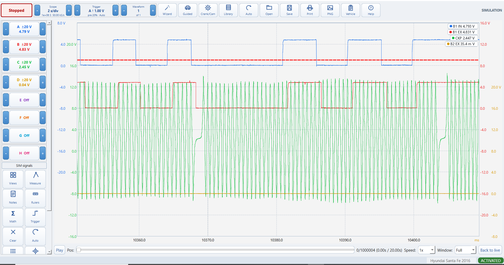

About HantekScopeQt
HantekScopeQt is an affordable Picoscope alternative and professional automotive test and measurement platform supporting multiple oscilloscope ecosystems including Hantek, PicoScope, AutoScope, Autel MaxiScope and HScope. Whether you are looking for the best scope software for automotive diagnostics or need to import waveforms from other tools, HantekScopeQt gives you a complete oscilloscope and engine analysis environment.
The software combines oscilloscope acquisition, waveform analysis, protocol decoding, digital multimeter functions, waveform conversion, guided diagnostics, crankshaft and camshaft correlation analysis, reluctor wheel analysis, sensor simulation and long-term recording within a single application available on Windows, Linux and Android.
Why Choose HantekScopeQt?
| Feature | Picoscope | HantekScopeQt |
|---|---|---|
| Waveform Import | Native only | Picoscope, Autel, HScope, AutoScope, CSV |
| Platforms | Windows / macOS | Windows, Linux, Android |
| Crank & Cam Correlation | Limited | Automatic tooth counting & phase analysis |
| Guided Diagnostics | Basic | 185+ Automotive guided tests |
| CAN / Protocol Decoding | Extra cost | CAN, CAN FD, LIN, J1939, SENT, PSI5, I²C |
Key Features
⚡ High Performance Rendering
GPU accelerated waveform rendering with configurable anti-aliasing, smooth joins and adjustable trace thickness.
🧠 Guided Diagnostics
More than 185 tested automotive guided diagnostics with integrated technician helpers.
⚙️ Crank & Cam Correlation
Automatic tooth counting, missing tooth detection, cam phase measurements and animated engine timing analysis.
📡 Protocol Decoding
CAN, CAN FD, J1939, LIN, SENT, PSI5, I²C, I²S, 1-Wire and 10BASE-T1S support.
🔄 Waveform Interoperability
Import and export Hantek, PicoScope, AutoScope, Autel and HScope waveform formats.
📊 Digital Multimeter
Integrated voltmeter, ohmmeter and continuity tester.
📁 Unlimited Streaming
Direct-to-disk CSV recording with virtually unlimited recording duration.
🌍 Multi Platform
Windows, Linux and Android support.
Automotive Diagnose Capabilities
HantekScopeQt is built for professional automotive diagnose work. Technicians use it to diagnose engine misfires, timing issues, sensor faults, communication errors and intermittent problems across all major vehicle makes.
- Relative compression testing
- Injector and ignition analysis
- Pressure transducer support
- Charging and starting system analysis
- CAN / CAN FD / LIN network diagnostics
- 185+ guided automotive diagnose procedures
Supported Hardware
Hantek
- 1008 Series
- 6022 Series
- 6052 Series
- 6082 Series
- 6102 Series
- 6212 Series
- 2090 / 2150 / 2250 (Experimental)
- 5200 / 5200A (Experimental)
- 6021 (Experimental)
PicoScope
- 2000 Series
- 3000 Series
- 4000 Series
- 5000 Series
Autel
- MP408
- MP608
AutoScope
- USB AutoScope (Experimental)
SCPI Oscilloscopes (Experimental)
- Rigol
- Siglent
- Keysight / Agilent
- Tektronix
- Owon
- Batronix
Supported Formats & Waveforms Import
HantekScopeQt makes it easy to import waveforms from competing tools so you never lose access to your old diagnostic captures:
- .psdata (PicoScope)
- .msdata / .json (Autel)
- .mwf (AutoScope)
- .zip (HScope)
- .csv / .tsv / .mat
- .hantek (native)
Popular Guides
Screenshots

Multi-channel waveform capture with imported PicoScope, Autel and HScope files.

Animated crankshaft and camshaft correlation with automatic tooth counting.
Download & Get Started
Download the latest release of HantekScopeQt, the affordable automotive oscilloscope software and Picoscope alternative:
Download Latest Release